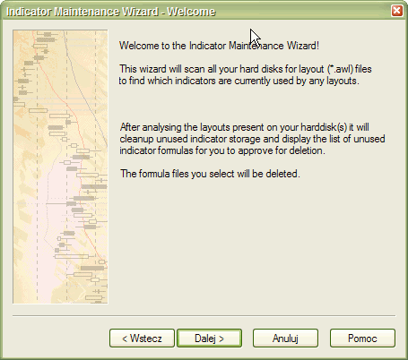
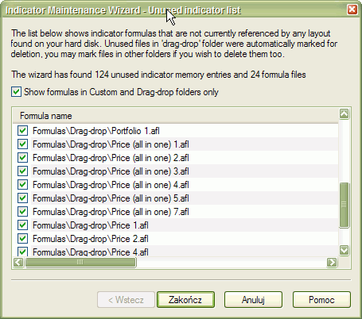

Indicator maintenance checks for any indicators that were deleted from any
layouts on your hard disk and frees table entries
allocated for deleted indicators. This procedure is rarely needed, but it is still
important because if you delete an indicator from one
layout, there is no guarantee that another layout file doesn't exist somewhere
on your hard disk that still references the given indicator.
So Indicator Maintenance scans all hard disks and all partitions, looking for
layout files and analyzing them to build the
"
actually used" table of indicators.

The ones that are not referenced
by any layout can be deleted from the internal table.
Depending on your choice, you may leave the default behavior (cleaning up only
the internal table) or deleting the actual formula files
that are not referenced. This is up to you. If you don't use a particular formula
for, say, AA Scan/Backtest/Optimization, you can
delete it. If you use it or need it for some archive purposes, leave it unchecked.
